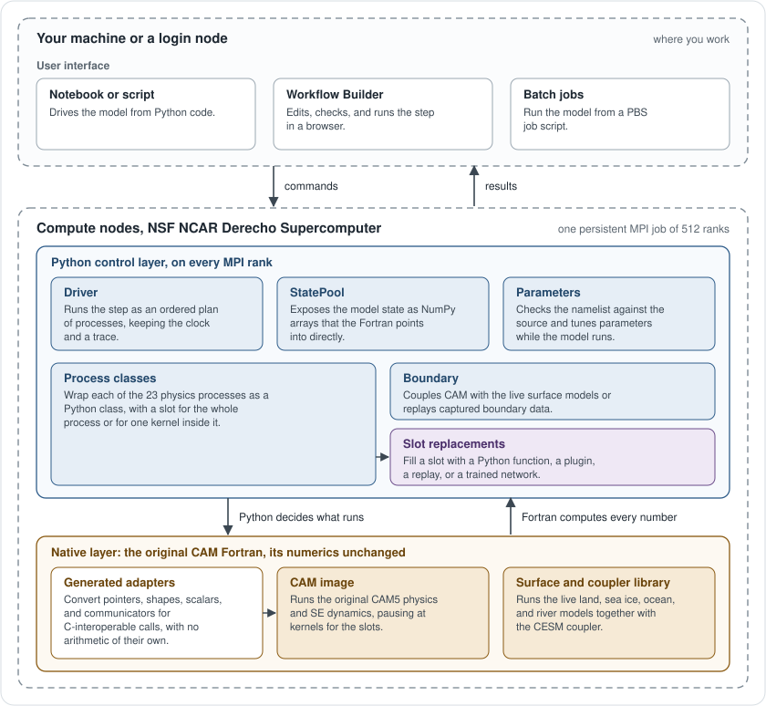
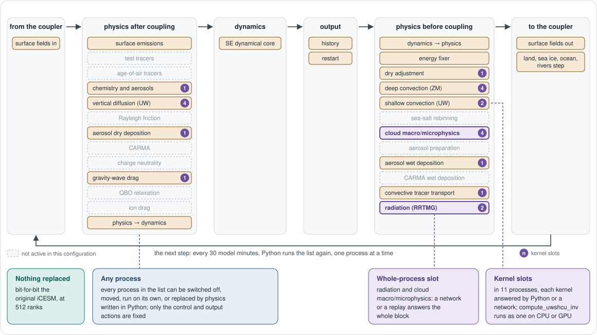
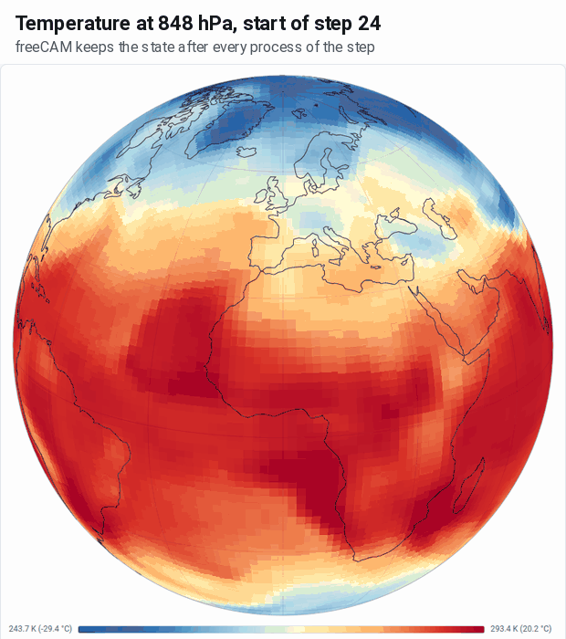
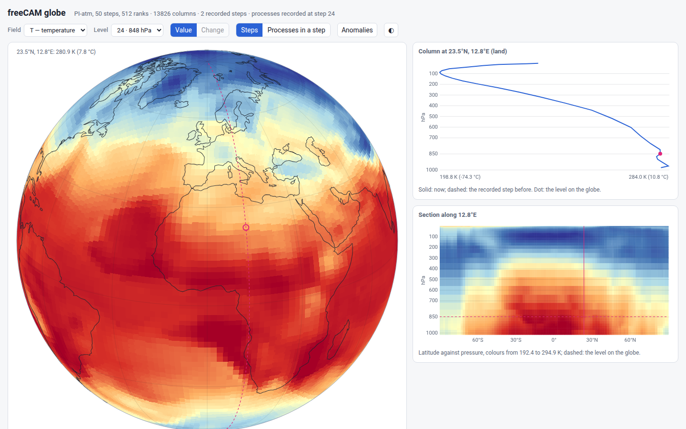
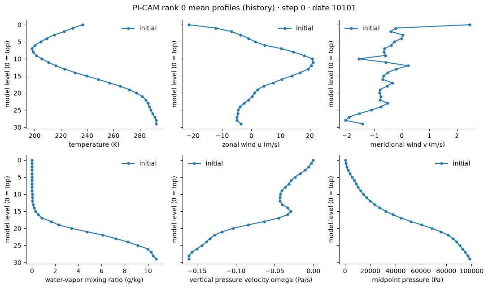
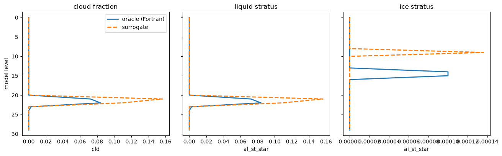

How it runs
The notebook starts one MPI job and keeps talking to it. Each rank holds its part of the globe as NumPy arrays; the fields stay there, and the notebook gets back only what it asks for.

One step, and what you can change
Python runs the step's processes one at a time, every 30 model minutes, and any of them can be switched off, moved or replaced by Python. Radiation and the cloud stage can also be answered whole by a network, and eleven processes have kernel slots. With nothing replaced, the run is the original.

What you see from a notebook
Everything below comes from the running model, through the same objects a notebook uses.

Inside one step, a process at a time
Because Python runs the step, the state can be kept after every process. Here the temperature at 848 hPa as step 24 begins, then what each of the seven processes that change it did on its own, in the order the step runs them.
ui = fc.Driver(case="PI-atm", nsteps=48).ui() ui.url # open it, press Run, then the Globe tab

Pick a column on the globe
The viewer follows the run as it steps. A click draws the column's profile and the latitude-pressure section along its meridian; the slider moves through the steps, or through the processes of one step.
A run recorded to disk (record_state=True) opens later with freecam globe <run>/state.

Read the live state
Every CAM field is a distributed NumPy array: statistics over all ranks, one rank's own columns, or a plot, without stopping the model.
driver.cam.state.T.stats(rank="global")
driver.cam.state.plot(rank=0,
variables=('T', 'u', 'v', 'q', 'omega', 'pmid'))

A trained network in a kernel's place
A kernel slot takes any callable with the kernel's inputs and outputs. Here a network answers mmacro_pcond, compared with the original Fortran on one column.
stage = Macrophysics() stage.kernels['mmacro_pcond'] = load_surrogate(MODEL) answer = stage.mmacro_pcond(column)
A model in a kernel slot, on the GPU
A transformer answers the shallow-convection kernel, compute_uwshcu_inv, inside the coupled model for a full month, on CPU and on A100 GPUs.